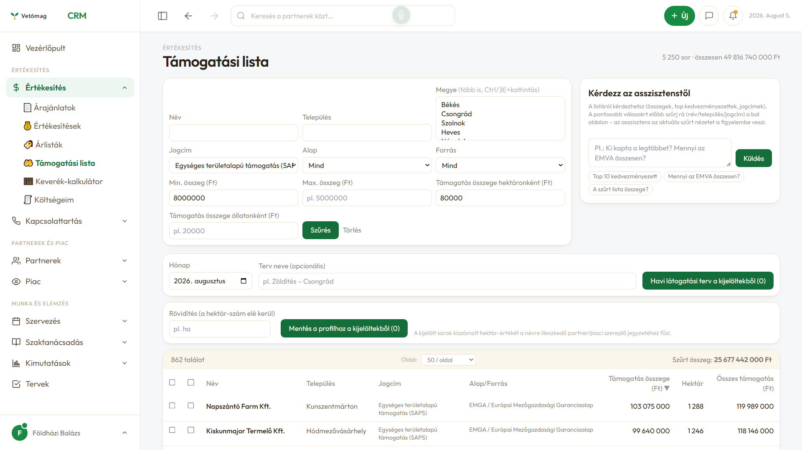
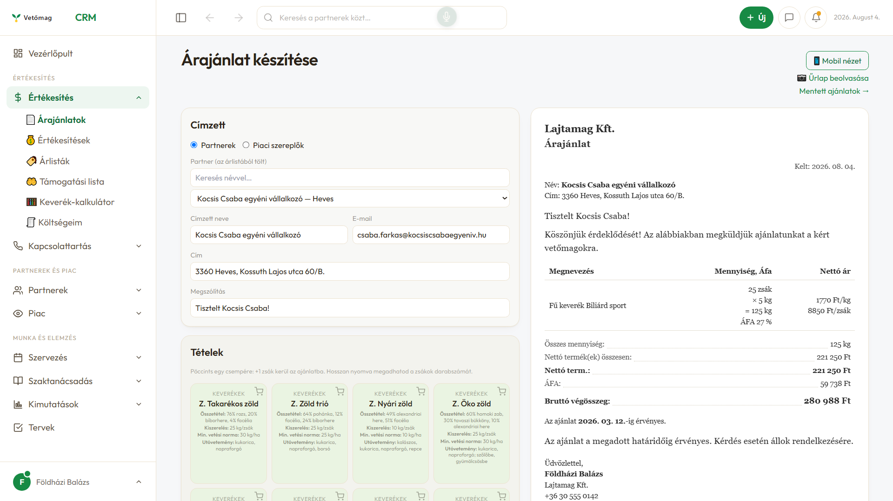

Ügyfélkezelés, árajánlat, térkép, hívásnapló és piacfigyelés vetőmag- és agrár-kereskedőknek. Nem általános CRM, amit mezőgazdaságra kell hajlítani — és nem prototípus: élesben megy, minden nap.
Ha a rövid videó után maradt kérdés: ebben végigmegyünk a partnerkezelésen, az árajánlaton, a terepi funkciókon, a kapcsolattartáson, a piacfigyelésen és az AI-ügynökökön.
Az agrártámogatási kifizetések nyilvánosak: ki, hol, milyen jogcímen, mennyit kapott. A rendszer behúzza a listát — és nem csak megmutatja, hanem kiszámolja belőle azt, amit tudni akarsz.
A visszaszámolt hektár és állatlétszám becslés: a támogatási összegből és az általad megadott fajlagos értékből számol. Kiindulópont a beszélgetéshez, nem hatósági adat.

A különbség nem a funkciók számában van, hanem abban, hogy az agrár-értékesítés valódi fogalmai mezők a rendszerben — nem a „megjegyzés" rovatba írt szövegek.
Hektár, AKG-részvétel és -terület, kultúrák, állatállomány, öntözés, tervezett és korábbi zöldítés, vásárlási motiváció, versenytárs-ajánlatok.
Keverék-csempék összetétellel és vetési normával, keverék-kalkulátor, súly szerinti szállítási díj, PDF és kiküldés egy gombbal — telefonról is.
Partnerek térképen, napi túra útvonalba rendezve, MePAR-blokkok, csapadéktérkép, műholdas vegetációs térkép.
Bejövő hívásnál a partner előzménye a képernyőn. A telefonnapló magától frissül, a hívás a partnerhez kerül jegyzettel együtt.
Versenytárs-termékek és árak egy helyen, ár-összehasonlítóval. Elvesztett ajánlatnál rögzül az ok és a versenytárs.
Adatdúsítás, partnerprofil, szakmai válaszok a saját dokumentumaidból, e-mail kampányok. Az asszisztens csak a saját CRM-adataidból dolgozik.
Minden kép a futó alkalmazásból készült. A partnernevek, telefonszámok és e-mail-címek kitaláltak: a felvételek anonimizált demó-adatbázisból származnak.
Ugyanez leírva: a probléma, a modulok, a bevezetés menete és az árazás alapjai. Jó, ha meg kell mutatni valakinek, aki nem néz videót.
